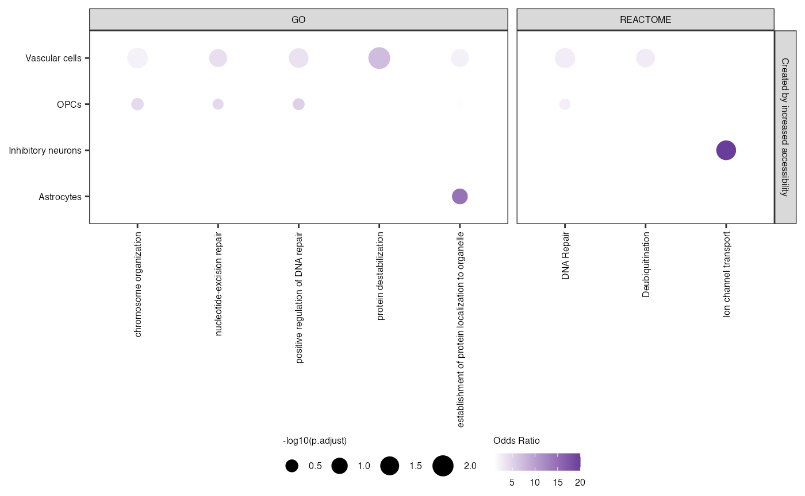
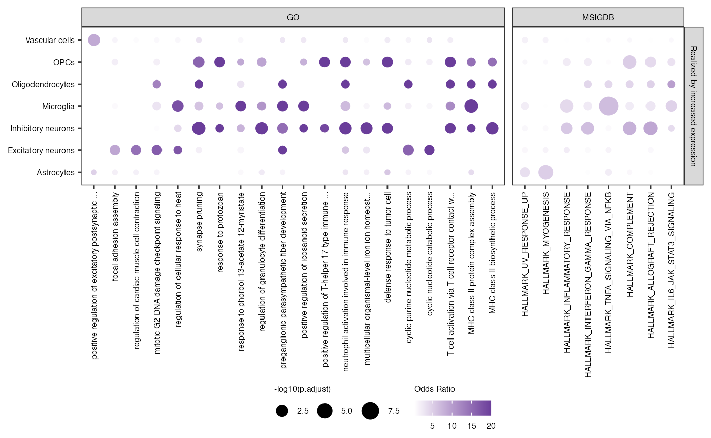

Differential epiPot analysis: Perform enrichment
Source:vignettes/articles/differential_3_perform_enrichment.Rmd
differential_3_perform_enrichment.Rmd
library(conflicted)
library(epiPot)
library(tidyverse)
library(msigdbr)
library(clusterProfiler)
library(org.Hs.eg.db)
conflicts_prefer(
base::intersect,
base::union,
dplyr::select,
dplyr::filter,
dplyr::rename
)Load data
We use epiPot results created in part two of the analysis.
DATA_PATH <- tools::R_user_dir("epipot_articles", "cache")
load(paste0(DATA_PATH, "/epipot_results.rda"))Helper functions
Click to show code
msigdb_hallmark <- msigdbr(species = "Homo sapiens", category = "H")
#> Warning: The `category` argument of `msigdbr()` is deprecated as of msigdbr 10.0.0.
#> ℹ Please use the `collection` argument instead.
#> This warning is displayed once per session.
#> Call `lifecycle::last_lifecycle_warnings()` to see where this warning was
#> generated.
msigdb_term2gene <-
msigdb_hallmark %>%
dplyr::select(gs_name, entrez_gene)
# Enrichment wrappers ----
enrichmsigdb_wrapper <- function(entrez_ids, bg_entrez) {
res <- clusterProfiler::enricher(
gene = entrez_ids,
universe = bg_entrez,
TERM2GENE = msigdb_term2gene,
pAdjustMethod = "BH",
pvalueCutoff = 1,
qvalueCutoff = 1
)
if (!is.null(res) && nrow(res@result) > 0) {
res <- clusterProfiler::setReadable(res, OrgDb = org.Hs.eg.db, keyType = "ENTREZID")
}
res
}
enrichGO_wrapper <- function(entrez_ids, bg_entrez) {
clusterProfiler::enrichGO(
gene = entrez_ids,
universe = bg_entrez,
OrgDb = org.Hs.eg.db,
keyType = "ENTREZID",
ont = "BP",
pAdjustMethod = "BH",
pvalueCutoff = 1,
qvalueCutoff = 1,
readable = TRUE
)
}
enrichKEGG_wrapper <- function(entrez_ids, bg_entrez) {
res <- clusterProfiler::enrichKEGG(
gene = entrez_ids,
universe = bg_entrez,
organism = "hsa",
pAdjustMethod = "BH",
pvalueCutoff = 1,
qvalueCutoff = 1
)
if (!is.null(res) && nrow(res@result) > 0) {
res <- setReadable(res, OrgDb = org.Hs.eg.db, keyType = "ENTREZID")
}
res
}
enrichReactome_wrapper <- function(entrez_ids, bg_entrez) {
ReactomePA::enrichPathway(
gene = entrez_ids,
universe = bg_entrez,
organism = "human",
pAdjustMethod = "BH",
pvalueCutoff = 1,
qvalueCutoff = 1,
readable = TRUE
)
}
# Enrichment runner ----
perform_enrichment <- function(
genes_of_interest,
background_genes,
cell_type = NULL,
condition = NULL,
contrast = NULL,
...
) {
# Validate input
if (length(genes_of_interest) == 0) {
message("No genes of interest provided")
return(list(msigdb=NULL, ego=NULL, kegg=NULL, reactome=NULL))
}
# Convert gene IDs
gene_ids <- tryCatch({
bitr(
genes_of_interest,
fromType = "SYMBOL",
toType = "ENTREZID",
OrgDb = org.Hs.eg.db
)
}, error = function(e) {
message("Gene ID conversion failed: ", e$message)
return(NULL)
})
if (is.null(gene_ids)) return(
list(
msigdb=NULL,
ego=NULL,
kegg=NULL,
reactome=NULL
)
)
# Convert background IDs
bg_ids <- tryCatch({
bitr(
background_genes,
fromType = "SYMBOL",
toType = "ENTREZID",
OrgDb = org.Hs.eg.db
)
}, error = function(e) {
message("Background gene conversion failed: ", e$message)
return(NULL)
})
if (is.null(bg_ids)) return(
list(
msigdb=NULL,
ego=NULL,
kegg=NULL,
reactome=NULL
)
)
# Harmonize Entrez IDs
entrez_before <- unique(na.omit(gene_ids$ENTREZID))
bg_entrez <- unique(na.omit(bg_ids$ENTREZID))
# Restrict to background universe
entrez_ids <- intersect(entrez_before, bg_entrez)
# Report removed IDs
if (length(entrez_ids) < length(entrez_before)) {
message(sprintf("Removed %d Entrez IDs not present in background",
length(entrez_before) - length(entrez_ids)))
}
# Stop if no overlap
if (length(entrez_ids) == 0) {
message("No overlap between genes_of_interest and background after ID harmonization")
return(list(msigdb=NULL, ego=NULL, kegg=NULL, reactome=NULL))
}
# Run enrichment
list(
msigdb = enrichmsigdb_wrapper(entrez_ids, bg_entrez),
ego = enrichGO_wrapper(entrez_ids, bg_entrez),
kegg = enrichKEGG_wrapper(entrez_ids, bg_entrez),
reactome = enrichReactome_wrapper(entrez_ids, bg_entrez),
metadata = list(
cell_type = cell_type,
condition = condition,
contrast = contrast,
...
)
)
}
# Enrichment results processing ----
calculate_odds_ratio <- function(df) {
df %>%
mutate(
# Query genes in term
x = as.numeric(sub("/.*","", GeneRatio)),
# Total query genes
y = as.numeric(sub(".*/","", GeneRatio)),
# Background genes in term
a = as.numeric(sub("/.*","", BgRatio)),
# Total background genes
b = as.numeric(sub(".*/","", BgRatio)),
# Fisher-style odds ratio
OddsRatio = ((x + 0.5)/ (y - x + 0.5)) /
((a - x + 0.5) / (b - a - y + x + 0.5))
)
}
process_enrichment_results <- function(results_list, metadata_fields = c("cell_type", "condition", "contrast", "wedge")) {
purrr::map_dfr(names(results_list), function(name) {
res <- results_list[[name]]
if (is.null(res)) return(dplyr::tibble())
# Extract metadata
meta <- res$metadata
res$metadata <- NULL
# Parse analysis name
name_parts <- strsplit(name, "\\|")[[1]]
if (length(name_parts) >= 2) {
meta$cell_type <- name_parts[1]
meta$condition <- name_parts[2]
if (length(name_parts) >= 3) meta$wedge <- name_parts[3]
}
purrr::map_dfr(c("msigdb", "ego", "kegg", "reactome"), function(enrich_type) {
enrich_obj <- res[[enrich_type]]
if (is.null(enrich_obj) || is.null(enrich_obj@result) || nrow(enrich_obj@result) == 0) {
return(dplyr::tibble())
}
df <- enrich_obj@result %>%
dplyr::filter(Count >= 1)
if (nrow(df) == 0) return(dplyr::tibble())
# Attach metadata
for (field in metadata_fields) {
if (field == "cell_type") {
df[[field]] <- if (!is.null(meta$cell_type)) meta$cell_type else NA_character_
} else if (field == "condition") {
df[[field]] <- if (!is.null(meta$condition)) meta$condition else NA_character_
} else if (field == "contrast") {
df[[field]] <- if (!is.null(meta$contrast)) meta$contrast else NA_character_
} else if (field == "wedge") {
df[[field]] <- if (!is.null(meta$wedge)) meta$wedge else NA_character_
} else {
df[[field]] <- if (!is.null(meta[[field]])) meta[[field]] else NA_character_
}
}
df <- df %>%
dplyr::mutate(Source = dplyr::case_when(
enrich_type == "ego" ~ "GO",
enrich_type == "msigdb" ~ "MSIGDB",
TRUE ~ toupper(enrich_type)
)) %>%
calculate_odds_ratio()
if (!is.null(name)) df$Analysis <- name
df
})
})
}
# Enrichment plotting ----
order_by_oddsratio <- function(df) {
df %>%
group_by(Description) %>%
# Order by maximum odds ratio
summarize(sorting_value = max(OddsRatio)) %>%
arrange(desc(sorting_value)) %>%
pull(Description) %>%
as.character()
}
create_enrichment_plot <- function(
df,
facet_mode = c("none", "rows", "grid", "condition_wedge", "condition_source"),
wedge_labels = NULL,
condition_labels = NULL,
or_cap = 20
) {
if (nrow(df) == 0) return(NULL)
facet_mode <- match.arg(facet_mode)
# Cap odds ratio
df <- df %>%
mutate(OddsRatio = pmin(OddsRatio, or_cap))
purple_scheme <- c("white", "#6a3d9a")
term_order <- order_by_oddsratio(df)
p <- ggplot(df, aes(
x = factor(Description, levels = rev(term_order)),
y = CellType,
size = -log10(p.adjust),
color = OddsRatio
)) +
geom_point() +
scale_color_gradientn(colors = purple_scheme) +
scale_y_discrete(labels = function(y) stringr::str_trunc(y, 50)) +
scale_x_discrete(labels = function(x) stringr::str_trunc(x, 50)) +
epiPot:::theme_epipot(
base_size = 6,
grid = FALSE,
rotate = TRUE,
base_family = "Helvetica"
) +
theme(
legend.position = "bottom",
legend.key.size = unit(0.4, "cm"),
legend.margin = margin(0, 0, 0, 0, unit = "pt"),
legend.box.spacing = unit(2, "mm"),
legend.title.position = "top"
) +
labs(
x = NULL,
y = NULL,
size = "-log10(p.adjust)",
color = "Odds Ratio"
)
# Apply faceting
if (facet_mode == "condition_wedge") {
p <- p + facet_grid(
Condition ~ Wedge,
scales = "free",
space = "free",
labeller = labeller(
Condition = condition_labels,
Wedge = wedge_labels
)
)
} else if (facet_mode == "condition_source") {
p <- p + facet_grid(
Condition ~ Source,
scales = "free",
space = "free",
labeller = labeller(
Condition = condition_labels
)
)
} else if (facet_mode == "grid") {
p <- p + facet_grid(
Wedge ~ Source,
scales = "free",
space = "free",
labeller = labeller(Wedge = wedge_labels)
)
} else if (facet_mode == "rows") {
p <- p + facet_grid(
. ~ Source,
scales = "free",
space = "free"
)
}
return(p)
}
# Collapse GO terms ----
jaccard <- function(ll) {
ids <- names(ll)
mat <- matrix(
0,
nrow = length(ids),
ncol = length(ids),
dimnames = list(ids, ids)
)
for (i in ids) {
for (j in ids) {
mat[i, j] <- length(intersect(ll[[i]], ll[[j]])) /
length(union(ll[[i]], ll[[j]]))
}
}
diag(mat) <- 0
mat
}
collapse_redundant_terms <- function(enr_df,
jaccard_cutoff = 0.35) {
enr_sig <- enr_df %>%
dplyr::mutate(
term_key = paste(Source, ID, sep = "::")
)
term_gene_sets <- enr_sig %>%
dplyr::select(Source, term_key, geneID) %>%
dplyr::distinct() %>%
tidyr::separate_rows(geneID, sep = "/") %>%
dplyr::group_by(Source, term_key) %>%
dplyr::summarise(
genes = list(unique(geneID)),
.groups = "drop"
)
group_maps <- purrr::map_dfr(
split(term_gene_sets, term_gene_sets$Source),
function(df_source) {
gene_sets <- df_source$genes
names(gene_sets) <- df_source$term_key
if (length(gene_sets) == 1) {
return(tibble::tibble(
term_key = names(gene_sets),
redundancy_group = paste0(df_source$Source[1], "_G1")
))
}
jac <- jaccard(gene_sets)
adj <- jac >= jaccard_cutoff
diag(adj) <- FALSE
g <- igraph::graph_from_adjacency_matrix(
adj,
mode = "undirected"
)
cl <- igraph::components(g)$membership
tibble::tibble(
term_key = names(cl),
redundancy_group = paste0(df_source$Source[1], "_G", cl)
)
}
)
enr_grouped <- enr_sig %>%
dplyr::left_join(
group_maps,
by = "term_key",
relationship = "many-to-one"
)
canonical_terms <- enr_grouped %>%
dplyr::mutate(
term_penalty = dplyr::case_when(
Source == "KEGG" & stringr::str_detect(
Description,
stringr::regex("cancer|carcinoma|leukemia|infection|disease", ignore_case = TRUE)
) ~ 1,
TRUE ~ 0
)
) %>%
dplyr::group_by(Source, redundancy_group) %>%
dplyr::arrange(
term_penalty,
dplyr::desc(OddsRatio),
p.adjust,
dplyr::desc(Count)
) %>%
dplyr::slice_head(n = 1) %>%
dplyr::ungroup() %>%
dplyr::select(
Source,
redundancy_group,
canonical_ID = ID,
canonical_Description = Description
)
enr_grouped <- enr_grouped %>%
dplyr::left_join(
canonical_terms,
by = c("Source", "redundancy_group")
)
representative_by_combo <- enr_grouped %>%
dplyr::group_by(
CellType,
Condition,
Wedge,
Source,
redundancy_group
) %>%
dplyr::mutate(
term_penalty = dplyr::case_when(
Source == "KEGG" & stringr::str_detect(
Description,
stringr::regex("cancer|carcinoma|leukemia|infection|disease", ignore_case = TRUE)
) ~ 1,
TRUE ~ 0
)
) %>%
dplyr::arrange(
term_penalty,
dplyr::desc(OddsRatio),
p.adjust,
dplyr::desc(Count)
) %>%
dplyr::slice_head(n = 1) %>%
dplyr::ungroup() %>%
dplyr::mutate(
Original_ID = ID,
Original_Description = Description,
ID = canonical_ID,
Description = canonical_Description
)
list(
collapsed = representative_by_combo,
grouped = enr_grouped
)
}Driver enrichment
Perform enrichment.
wedge_results <- list()
wedge_categories <- unique(na.omit(scatter_df$driver))
cell_types <- unique(scatter_df$cell_type)
conditions <- unique(scatter_df$condition)
combinations <- expand.grid(
CellType = cell_types,
Condition = conditions,
Wedge = wedge_categories,
stringsAsFactors = FALSE
)
for (i in seq_len(nrow(combinations))) {
ctx <- combinations$CellType[i]
cond <- combinations$Condition[i]
wedge <- combinations$Wedge[i]
combo_name <- paste(ctx, cond, wedge, sep = "|")
# Get genes for this combination
genes <- scatter_df %>%
filter(cell_type == ctx, condition == cond, driver == wedge) %>%
pull(genes) %>%
unique()
# Perform enrichment
wedge_results[[combo_name]] <- tryCatch({
perform_enrichment(
genes_of_interest = genes,
background_genes = rownames(voom_results_z_scaled$E),
analysis_type = "wedge",
wedge_type = wedge,
cell_type = ctx,
condition = cond
)
}, error = function(e) {
message("Error processing ", combo_name, ": ", e$message)
NULL
})
# Progress update
message(sprintf("Processed %d/%d: %s", i, nrow(combinations), combo_name))
}
#> 'select()' returned 1:1 mapping between keys and columns
#> Loading required namespace: limma
#> 'select()' returned 1:many mapping between keys and columns
#> Reading KEGG annotation online: "https://rest.kegg.jp/link/hsa/pathway"...
#> Reading KEGG annotation online: "https://rest.kegg.jp/list/pathway/hsa"...
#> Processed 1/28: Oligodendrocytes|AD|RNA created
#> 'select()' returned 1:1 mapping between keys and columns
#> 'select()' returned 1:many mapping between keys and columns
#> Processed 2/28: Microglia|AD|RNA created
#> 'select()' returned 1:1 mapping between keys and columns
#> 'select()' returned 1:many mapping between keys and columns
#> Processed 3/28: OPCs|AD|RNA created
#> 'select()' returned 1:1 mapping between keys and columns
#> 'select()' returned 1:many mapping between keys and columns
#> Processed 4/28: Inhibitory neurons|AD|RNA created
#> 'select()' returned 1:1 mapping between keys and columns
#> 'select()' returned 1:many mapping between keys and columns
#> Processed 5/28: Excitatory neurons|AD|RNA created
#> 'select()' returned 1:1 mapping between keys and columns
#> 'select()' returned 1:many mapping between keys and columns
#> Processed 6/28: Astrocytes|AD|RNA created
#> 'select()' returned 1:1 mapping between keys and columns
#> 'select()' returned 1:many mapping between keys and columns
#> Processed 7/28: Vascular cells|AD|RNA created
#> 'select()' returned 1:1 mapping between keys and columns
#> 'select()' returned 1:many mapping between keys and columns
#> Processed 8/28: Oligodendrocytes|AD|RNA realized
#> 'select()' returned 1:1 mapping between keys and columns
#> 'select()' returned 1:many mapping between keys and columns
#> Processed 9/28: Microglia|AD|RNA realized
#> 'select()' returned 1:1 mapping between keys and columns
#> 'select()' returned 1:many mapping between keys and columns
#> Processed 10/28: OPCs|AD|RNA realized
#> 'select()' returned 1:1 mapping between keys and columns
#> 'select()' returned 1:many mapping between keys and columns
#> Processed 11/28: Inhibitory neurons|AD|RNA realized
#> 'select()' returned 1:1 mapping between keys and columns
#> 'select()' returned 1:many mapping between keys and columns
#> Processed 12/28: Excitatory neurons|AD|RNA realized
#> 'select()' returned 1:1 mapping between keys and columns
#> 'select()' returned 1:many mapping between keys and columns
#> Processed 13/28: Astrocytes|AD|RNA realized
#> 'select()' returned 1:many mapping between keys and columns
#> 'select()' returned 1:many mapping between keys and columns
#> Processed 14/28: Vascular cells|AD|RNA realized
#> 'select()' returned 1:1 mapping between keys and columns
#> 'select()' returned 1:many mapping between keys and columns
#> --> No gene can be mapped....
#> --> Expected input gene ID: 369,2053,1717,1282,604,4189
#> --> return NULL...
#> --> No gene can be mapped....
#> --> Expected input gene ID: 10459,9643,7014,1111,10933,10856
#> --> return NULL...
#> --> No gene can be mapped....
#> --> Expected input gene ID: 124,83440,5315,5160,5226,414328
#> --> return NULL...
#> --> No gene can be mapped....
#> --> Expected input gene ID: 10125,1950,112714,14,10846,151
#> --> return NULL...
#> Processed 15/28: Oligodendrocytes|AD|ATAC created
#> 'select()' returned 1:1 mapping between keys and columns
#> 'select()' returned 1:many mapping between keys and columns
#> Processed 16/28: Microglia|AD|ATAC created
#> 'select()' returned 1:1 mapping between keys and columns
#> 'select()' returned 1:many mapping between keys and columns
#> Processed 17/28: OPCs|AD|ATAC created
#> 'select()' returned 1:1 mapping between keys and columns
#> 'select()' returned 1:many mapping between keys and columns
#> Processed 18/28: Inhibitory neurons|AD|ATAC created
#> 'select()' returned 1:1 mapping between keys and columns
#> 'select()' returned 1:many mapping between keys and columns
#> --> No gene can be mapped....
#> --> Expected input gene ID: 1717,33,284119,8436,2820,27069
#> --> return NULL...
#> Processed 19/28: Excitatory neurons|AD|ATAC created
#> 'select()' returned 1:1 mapping between keys and columns
#> 'select()' returned 1:many mapping between keys and columns
#> Warning in calculate_qvalue(ora_res$pvalue): qvalue::qvalue() failed, returning
#> NA for qvalue. Error: missing values and NaN's not allowed if 'na.rm' is FALSE
#> Processed 20/28: Astrocytes|AD|ATAC created
#> 'select()' returned 1:1 mapping between keys and columns
#> 'select()' returned 1:many mapping between keys and columns
#> Processed 21/28: Vascular cells|AD|ATAC created
#> No genes of interest provided
#> Processed 22/28: Oligodendrocytes|AD|ATAC realized
#> 'select()' returned 1:1 mapping between keys and columns
#> 'select()' returned 1:many mapping between keys and columns
#> --> No gene can be mapped....
#> --> Expected input gene ID: 1149,47,718,1351,128338,51
#> --> return NULL...
#> Warning in calculate_qvalue(ora_res$pvalue): qvalue::qvalue() failed, returning
#> NA for qvalue. Error: missing values and NaN's not allowed if 'na.rm' is FALSE
#> Warning in calculate_qvalue(ora_res$pvalue): qvalue::qvalue() failed, returning
#> NA for qvalue. Error: missing values and NaN's not allowed if 'na.rm' is FALSE
#> Warning in calculate_qvalue(ora_res$pvalue): qvalue::qvalue() failed, returning
#> NA for qvalue. Error: missing values and NaN's not allowed if 'na.rm' is FALSE
#> Processed 23/28: Microglia|AD|ATAC realized
#> 'select()' returned 1:1 mapping between keys and columns
#> 'select()' returned 1:many mapping between keys and columns
#> Processed 24/28: OPCs|AD|ATAC realized
#> 'select()' returned 1:1 mapping between keys and columns
#> 'select()' returned 1:many mapping between keys and columns
#> Processed 25/28: Inhibitory neurons|AD|ATAC realized
#> No genes of interest provided
#> Processed 26/28: Excitatory neurons|AD|ATAC realized
#> 'select()' returned 1:1 mapping between keys and columns
#> 'select()' returned 1:many mapping between keys and columns
#> --> No gene can be mapped....
#> --> Expected input gene ID: 348,112,718,284119,217,1349
#> --> return NULL...
#> Warning in calculate_qvalue(ora_res$pvalue): qvalue::qvalue() failed, returning
#> NA for qvalue. Error: missing values and NaN's not allowed if 'na.rm' is FALSE
#> --> No gene can be mapped....
#> --> Expected input gene ID: 55276,223,2539,10327,2271,3101
#> --> return NULL...
#> --> No gene can be mapped....
#> --> Expected input gene ID: 120425,113220,1445,10544,10938,1020
#> --> return NULL...
#> Processed 27/28: Astrocytes|AD|ATAC realized
#> 'select()' returned 1:1 mapping between keys and columns
#> 'select()' returned 1:many mapping between keys and columns
#> Processed 28/28: Vascular cells|AD|ATAC realizedProcess results.
wedge_df <- process_enrichment_results(
wedge_results,
metadata_fields = c("wedge_type", "cell_type", "condition")
) %>%
rename(
Wedge = wedge_type,
CellType = cell_type,
Condition = condition
)
# Filter top terms
wedge_filtered <-
wedge_df %>%
filter(Count >= 3) %>%
filter(p.adjust < 0.05)
collapsed_res <- collapse_redundant_terms(
wedge_filtered,
jaccard_cutoff = 0.5
)
wedge_df_collapsed_after <- collapsed_res$collapsed
group_map <- collapsed_res$grouped %>%
select(
Source,
term_key,
redundancy_group,
canonical_ID,
canonical_Description
) %>%
distinct()
top_wedge_terms <-
wedge_df_collapsed_after %>%
group_by(CellType, Condition, Wedge, Source) %>%
arrange(desc(OddsRatio)) %>%
slice_head(n = 5) %>%
ungroup()
top_groups <-
top_wedge_terms %>%
select(Wedge, Source, redundancy_group) %>%
distinct()
wedge_df_raw_grouped <-
wedge_df %>%
mutate(
term_key = paste(Source, ID, sep = "::")
) %>%
inner_join(
group_map,
by = c("Source", "term_key")
)
# Keep collapsed values
collapsed_exact <-
wedge_df_collapsed_after %>%
mutate(
value_source = "collapsed_exact",
ID_raw = Original_ID,
Description_raw = Original_Description,
ID_plot = canonical_ID,
Description_plot = canonical_Description,
ID = ID_plot,
Description = Description_plot
)
# Build raw fallback
raw_fallback <-
wedge_df_raw_grouped %>%
semi_join(
top_groups,
by = c("Wedge", "Source", "redundancy_group")
) %>%
mutate(
term_penalty = case_when(
Source == "KEGG" & str_detect(
Description,
regex(
"cancer|carcinoma|leukemia|infection|disease",
ignore_case = TRUE
)
) ~ 1,
TRUE ~ 0
)
) %>%
group_by(CellType, Condition, Wedge, Source, redundancy_group) %>%
arrange(
term_penalty,
desc(OddsRatio),
p.adjust,
desc(Count)
) %>%
slice_head(n = 1) %>%
ungroup() %>%
mutate(
value_source = "raw_fallback",
ID_raw = ID,
Description_raw = Description,
ID_plot = canonical_ID,
Description_plot = canonical_Description,
ID = ID_plot,
Description = Description_plot
)
# Prefer collapsed values;
# use fallback for missing combinations
wedge_final_df <-
bind_rows(
collapsed_exact %>%
semi_join(
top_groups,
by = c("Wedge", "Source", "redundancy_group")
),
raw_fallback %>%
anti_join(
collapsed_exact,
by = c("CellType", "Condition", "Wedge", "Source", "redundancy_group")
)
)
# Split wedge classes
created_df <-
wedge_final_df %>%
filter(Wedge == "ATAC created")
realized_df <-
wedge_final_df %>%
filter(Wedge == "RNA realized", Source %in% c("GO", "MSIGDB"))Generate plots.
PLOT_WEDGE_LABELS <- c(
"RNA realized" = "Realized by increased expression",
"RNA created" = "Created by increased expression",
"ATAC realized" = "Realized by increased accessibility",
"ATAC created" = "Created by increased accessibility",
"created" = "Created by increased\nexpression",
"realized" = "Realized by increased expression\nwithout DE genes"
)
create_enrichment_plot(
created_df,
facet_mode = "grid",
wedge_labels = PLOT_WEDGE_LABELS
)
create_enrichment_plot(
realized_df,
facet_mode = "grid",
wedge_labels = PLOT_WEDGE_LABELS
)